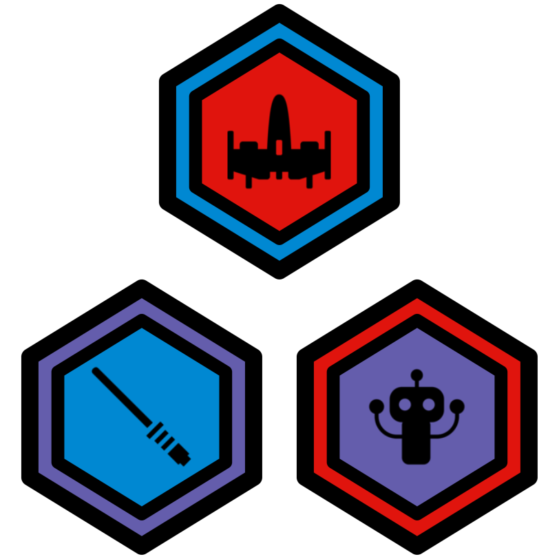

Coding for Star Wars Fans

1 Intro Katas
1.1 Core Values Kata (difficulty = 1)
1.2 Hello World Kata (difficulty = 1)
2 Rebel Katas
2.1 Rebel Kata (difficulty = 1)
2.2 Rebel Kata (difficulty = 1)
2.3 Rebel Kata (difficulty = 2)
2.4 Rebel Kata (difficulty = 2)
2.5 Rebel Kata (difficulty = 3)
3 Imperial Katas
3.1 Imperial Kata (difficulty = 1)
3.2 Imperial Kata (difficulty = 3)
3.3 Imperial Kata (difficulty = 5)
3.4 Imperial Weapon Kata (difficulty = 2)
3.5 Imperial Weapon Kata (difficulty = 2)
3.6 Imperial Weapon Kata (difficulty = 2)
4 Weapon Katas
4.1 Lightsaber Kata (difficulty = 1)
4.2 Lightsaber Kata (difficulty = 3)
4.3 Lightsaber Kata (difficulty = 4)
4.4 Blaster Kata (difficulty = 1)
4.5 Blaster Kata (difficulty = 3)
4.6 Blaster Kata (difficulty = 4)
5 Power-Up Katas
5.1 Health Kata (difficulty = 2)
5.2 Health Kata (difficulty = 2)
5.3 Health Kata (difficulty = 7)
5.4 Force Field Kata (difficulty = 2)
5.5 Force Field Kata (difficulty = 3)
5.6 Force Field Kata (difficulty = 4)
6 Trap Weapons Katas
6.1 Spike Mine Kata (difficulty = 2)
6.2 Spike Mine Kata (difficulty = 3)
6.3 Spike Mine Kata (difficulty = 4)
6.4 Lightsaber Droid Kata (difficulty = 2)
6.5 Lightsaber Droid Kata (difficulty = 4)
6.6 Lightsaber Droid Kata (difficulty = 5)
7 Extra Katas
7.1 Planet Kata (difficulty = 1)
7.2 Planet Kata (difficulty = 1)
7.3 Planet Kata (difficulty = 2)
7.4 Planet Kata (difficulty = 3)
7.5 Level Design Kata (difficulty = 1)
7.6 Level Design Kata (difficulty = 2)
7.7 Level Design Kata (difficulty = 2)
7.8 Level Design Kata (difficulty = 4)
7.9 Boost Kata (difficulty = 3)
7.10 Boost Kata (difficulty = 3)
7.11 Boost Kata (difficulty = 7)
7.12 Shield Kata (difficulty = 2)
7.13 Shield Kata (difficulty = 2)
7.14 Shield Kata (difficulty = 7)
7.15 Lava Pit Kata (difficulty = 2)
7.16 Lava Pit Kata (difficulty = 3)
7.17 Lava Pit Kata (difficulty = 5)
7.18 Blaster Droid Kata (difficulty = 2)
7.19 Blaster Droid Kata (difficulty = 4)
7.20 Blaster Droid Kata (difficulty = 5)
7.21 Lightsaber Armor Kata (difficulty = 2)
7.22 Lightsaber Armor Kata (difficulty = 4)
7.23 Lightsaber Armor Kata (difficulty = 6)
7.24 Blaster Armor Kata (difficulty = 2)
7.25 Blaster Armor Kata (difficulty = 4)
7.26 Blaster Armor Kata (difficulty = 5)
8 Game Show
8.1 Monday
8.2 Tuesday
8.3 Wednesday
8.4 Thursday
9 Assets Library
9.1 Heros
9.2 Villains
9.3 Battle Arena Assets
9.3.1 Avatars and Enemies
9.3.2 Backgrounds
9.3.3 Sprite Sheets
9.4 Sprite Sheets